Sección 2 Fundamentos de Teoría de Redes
Primero, tenemos que importar algunas de las librerías básicas.
networkxes la librería básica de redes en Python.pandasynumpyson básicas para manipulación de bases de datos y arreglos.matplotlib.pyplotes la básica para hacer plots.
Una de las formas de definir una gráfica en Python es crear primero un objeto gráfica y después ir agregando los vértices y aristas. Al crear el objeto, se generará una gráfica vacía.
Podemos agregar nodos de uno en uno, por medio de una lista y las aristas es similar, podemos especificar entre que nodos están.
# Un solo nodo
G.add_node(1)
# Dos nodos como lista
G.add_nodes_from([2,3])
# Arista entre nodo 1 y 2
G.add_edge(1, 2)
# Arista entre nodo 2 y 3
e = (2,3)
G.add_edge(*e)Algo que queremos hacer, es poder visualizar estas gráficas.

Vamos a crear otras gráficas.
MyGraph = nx.Graph()
MyGraph.add_edge('Antonio', 'Valentina')
MyGraph.add_edge('Antonio', 'Claudia')
MyGraph.add_edge('Claudia','Valentina')
print(MyGraph) # Imprimir información de la gráfica## Graph with 3 nodes and 3 edges## Número de vértices 3## Número de aristas 3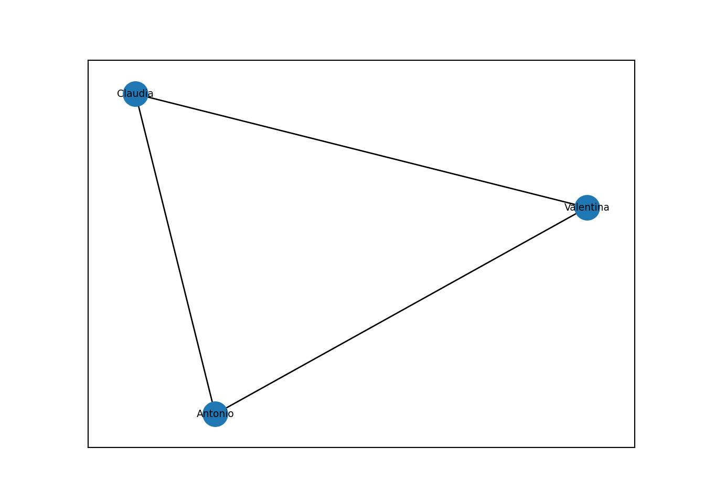
Existen varios atributos que podemos usar para dibujar la red. Por ejemplo:nx.draw_circular, nx.draw_planar, nx.draw_random, nx.draw_spectral, nx.draw_spring, nx.draw_shell.

Vamos a construir una red simétrica. Los pesos pueden añadir intensidad de la relación en los nodos, cada arista tendrá un peso. Para gráficas dirigidas se usa nx.DiGraph().
DG = nx.DiGraph()
# Agregamos nodos y aristas
DG.add_nodes_from(["A", "B", "C"])
DG.add_edges_from([("A", "B"), ("B", "C")])
# Dibujamos la gráfica
nx.draw_networkx(DG, font_size=7)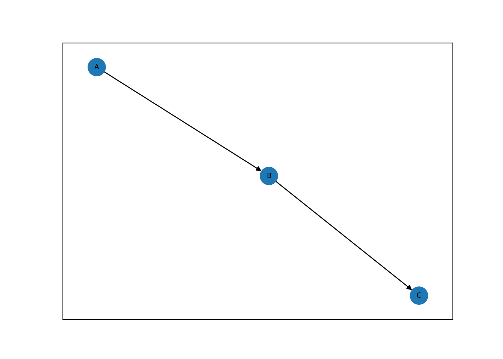
Y podemos crear una gráfica con pesos como sigue.
WG = nx.Graph()
# Agregamos nodos y aristas
WG.add_edge("A", "B", weight=3)
WG.add_edge("B", "C", weight=2)
WG.add_edge("C", "A", weight=1)
# Dibujamos la gráfica
nx.draw_networkx(WG, font_size=7)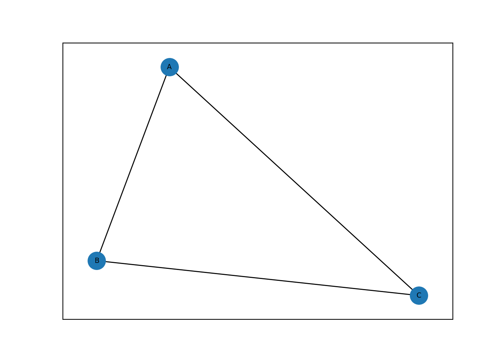
Sin embargo, si queremos que salga el peso, hay que modificar la forma de dibujarla.
WG2 = nx.Graph()
WG2.add_node("A", pos=(1,1))
WG2.add_node("B", pos=(2,2))
WG2.add_node("C", pos=(1,0))
WG2.add_edge("A","B",weight=0.5)
WG2.add_edge("A","C",weight=9.8)
pos=nx.get_node_attributes(WG2,'pos')
nx.draw(WG2,pos)
labels = nx.get_edge_attributes(WG2,'weight')
nx.draw_networkx_edge_labels(WG2,pos,edge_labels=labels)## {('A', 'B'): Text(1.499993978679413, 1.499993978679413, '0.5'), ('A', 'C'): Text(1.0, 0.49999868113081897, '9.8')}
Si tenemos ya una base de datos, vista como un data frame, podemos construir su gráfica también tomando la información de esta.
df = pd.DataFrame({ 'from':['A', 'B', 'C','A'], 'to':['D', 'A', 'E','C']})
G=nx.from_pandas_edgelist(df, 'from', 'to')
nx.draw(G, with_labels=True)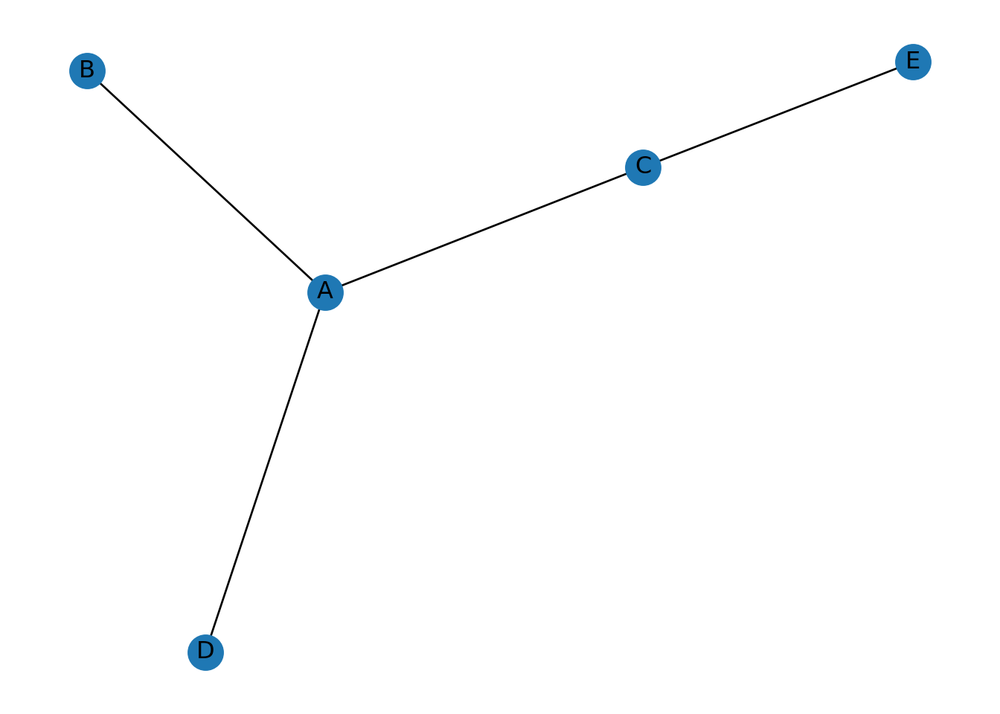
2.1 Matriz de Adyacencia
Las gráficas en networkx, las podemos crear también a partir de su matriz de adyacencia.
Supongamos que tenemos la siguiente matriz de adyacencia de una gráfica.
adjacency_matrix = np.array([[0, 1, 1, 0], [1, 0, 0, 1], [1, 0, 0, 0], [1, 1, 0, 0]])
print(adjacency_matrix)## [[0 1 1 0]
## [1 0 0 1]
## [1 0 0 0]
## [1 1 0 0]]Vamos a usar esta matriz para crear la gráfica.
## [(0, 1), (0, 2), (0, 3), (1, 3)]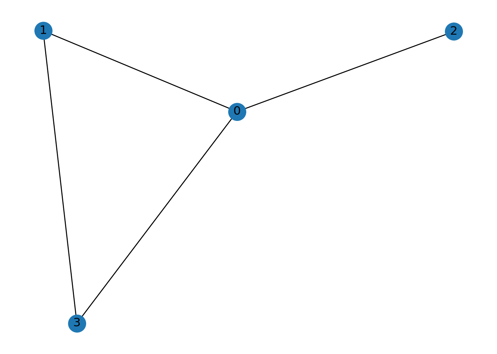
Y esta misma matriz, la podríamos usar para generar la red dirigida.
## [(0, 1), (0, 2), (1, 0), (1, 3), (2, 0), (3, 0), (3, 1)]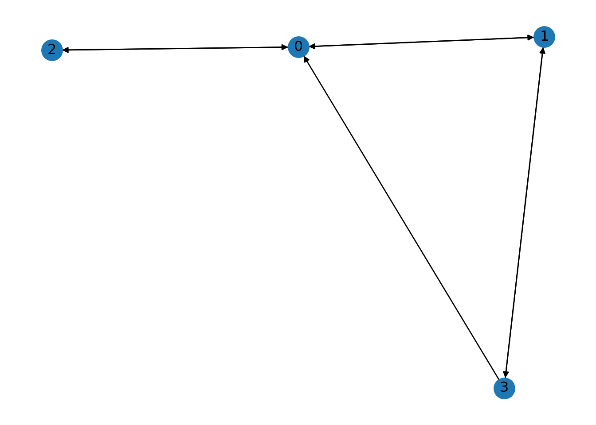
2.2 Redes con pesos
En muchas aplicaciones, no basta saber si dos nodos están conectados: queremos medir intensidad.
Ejemplo: ciudades conectadas por tiempo de traslado.
G = nx.Graph()
edges = [
("CDMX", "Querétaro", 2.5),
("CDMX", "Puebla", 1.8),
("Querétaro", "San Luis", 3.0),
("Puebla", "Veracruz", 2.2)
]
G.add_weighted_edges_from(edges)
pos = nx.spring_layout(G, seed=42)
nx.draw(G, pos, with_labels=True, node_size=2000, node_color="lightblue")
labels = nx.get_edge_attributes(G, "weight")
nx.draw_networkx_edge_labels(G, pos, edge_labels=labels)## {('CDMX', 'Querétaro'): Text(-0.03804987394440071, 0.29044345796704585, '2.5'), ('CDMX', 'Puebla'): Text(0.03310940855012143, -0.2517211871628955, '1.8'), ('Querétaro', 'San Luis'): Text(-0.09868076835080415, 0.7517180744260015, '3.0'), ('Puebla', 'Veracruz'): Text(0.10107661635624102, -0.7703266027551717, '2.2')}
nx.spring_layout: Cuando dibujas una red, necesitas decidir dónde se coloca cada nodo en el plano (coordenadas (x,y)). nx.spring_layout(G) calcula esas posiciones automáticamente usando un modelo tipo resortes:
cada arista actúa como un resorte que “jala” a sus extremos para acercarlos,
los nodos se repelen entre sí para que no queden amontonados,
el algoritmo busca una configuración “bonita” (pocas intersecciones, distancias razonables).
No cambia el grafo, solo produce un diccionario de posiciones.
## {'CDMX': array([-0.00479153, 0.03721578]), 'Querétaro': array([-0.07130957, 0.54368146]), 'Puebla': array([ 0.07100945, -0.54065133]), 'San Luis': array([-0.12605188, 0.95975409]), 'Veracruz': array([ 0.13114354, -1. ])}Ejercicio: Comparar con nx.circular_layout(G) para ver que “layout” = regla de colocación.
2.3 Redes dirigidas
En una red dirigida las aristas tienen orientación.
Ejemplo: prerequisitos de materias.
DG = nx.DiGraph()
DG.add_edge("Álgebra I", "Álgebra II")
DG.add_edge("Álgebra II", "Geometría")
DG.add_edge("Cálculo I", "Cálculo II")
pos = nx.spring_layout(DG, seed=10)
nx.draw(DG, pos,
with_labels=True,
node_size=2500,
node_color="lightcoral",
arrows=True,
arrowsize=20)
plt.title("Red dirigida (prerrequisitos)")
plt.show()
Grado en redes dirigidas
In-degree: número de aristas que llegan.
Out-degree: número de aristas que salen.
## In-degree: {'Álgebra I': 0, 'Álgebra II': 1, 'Geometría': 1, 'Cálculo I': 0, 'Cálculo II': 1}## Out-degree: {'Álgebra I': 1, 'Álgebra II': 1, 'Geometría': 0, 'Cálculo I': 1, 'Cálculo II': 0}2.4 Graficas acíclicas
Un grafo dirigido es acíclico si no contiene ciclos.
DAG = nx.DiGraph()
DAG.add_edges_from([
(1,2),
(1,3),
(2,4),
(3,4)
])
print("¿Es DAG?", nx.is_directed_acyclic_graph(DAG))## ¿Es DAG? TrueOrdenamiento topológico:
## [1, 2, 3, 4]Si numeramos los vértices según ese orden, la matriz de adyacencia queda triangular superior.
En un grafo dirigido sin ciclos, existe un orden de los vértices tal que todas las aristas van “hacia adelante” en ese orden. nx.topological_sort devuelve ese orden.
## [1, 2, 3, 4]Si reetiquetas/ordenas los vértices según ese orden y construyes la matriz de adyacencia en ese orden, la matriz queda triangular superior. Por ejemplo:
DAG = nx.DiGraph()
DAG.add_edges_from([(1,2),(1,3),(2,4),(3,4)])
order = list(nx.topological_sort(DAG))
print("Orden topológico:", order)## Orden topológico: [1, 2, 3, 4]## Matriz en ese orden:
## [[0 1 1 0]
## [0 0 0 1]
## [0 0 0 1]
## [0 0 0 0]]## [[0 0 0 0]
## [1 0 0 0]
## [1 0 0 0]
## [0 1 1 0]]2.5 Redes k-regulares
Un grafo es \(k\)-regular si todos los vértices tienen grado \(k\).
R = nx.random_regular_graph(d=3, n=8)
nx.draw(R, with_labels=True, node_size=1500)
plt.title("Grafo 3-regular")
plt.show()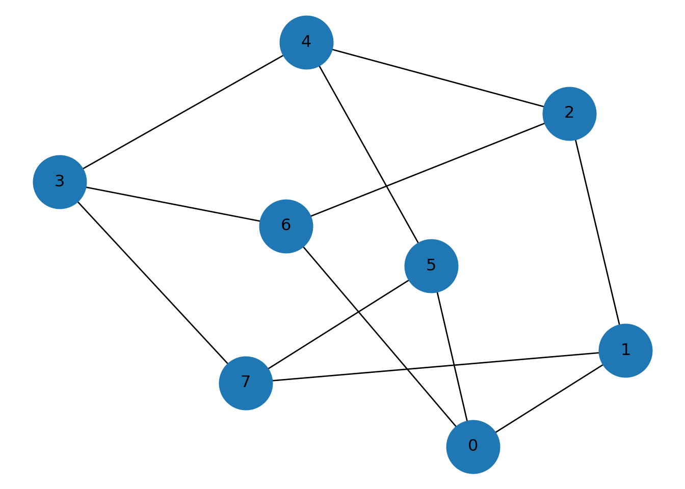
2.6 Multigrafos (multiaristas)
En algunos sistemas pueden existir varias relaciones entre dos nodos.
Ejemplo: dos actores que colaboran en varias películas.
## 0## 1## 2## Número de aristas entre A y B: 3Y para visualziarla:
pos = nx.spring_layout(MG, seed=3)
nx.draw(MG, pos, with_labels=True, node_size=2000)
plt.title("MultiGraph")
plt.show()
Para que se vea que hay varias aristas entre los mismos nodos, usamos connectionstyle con distintos radios.
## 0## 1## 2## 0pos = nx.spring_layout(MG, seed=2)
# Dibujo de nodos
nx.draw_networkx_nodes(MG, pos, node_size=2000, node_color="lightgreen")
nx.draw_networkx_labels(MG, pos)## {'A': Text(0.8284668313118051, -0.8726270765014832, 'A'), 'B': Text(0.12093500309378266, -0.1273729234985168, 'B'), 'C': Text(-0.949401834405588, 1.0, 'C')}# Dibujo de aristas: si son paralelas, usamos curvaturas distintas
edges = list(MG.edges(keys=True))
for i, (u, v, k) in enumerate(edges):
rad = 0.15 * (i % 3) # radios 0, 0.15, 0.30 (repite)
nx.draw_networkx_edges(
MG, pos,
edgelist=[(u, v)],
width=2,
connectionstyle=f"arc3,rad={rad}",
edge_color="gray"
)
plt.title("MultiGraph con multiaristas (arcos curvos)")
plt.axis("off")## (np.float64(-1.0962567812307198), np.float64(0.9571815276728693), np.float64(-1.0082027056679594), np.float64(1.1546815676912536))
## Número de aristas A-B: 32.7 Loops (lazos)
Un loop es una arista de un nodo a sí mismo.
## Grados: {'A': 3, 'B': 1}Importante:
En grafos no dirigidos, un loop contribuye 2 al grado.
NetworkX dibuja loops como “arcos” pequeños, pero a veces quedan discretos.
G = nx.Graph()
G.add_edges_from([("A","A"), ("A","B"), ("B","C"), ("C","C")]) # loops en A y C
pos = nx.spring_layout(G, seed=4)
nx.draw(G, pos, with_labels=True, node_size=2000, node_color="lightblue",
width=2, edge_color="gray")
plt.title("Grafo con loops en A y C")
plt.show()
También podemos listarlos:
## Loops: [('A', 'A'), ('C', 'C')]2.8 Redes bipartitas
Ejemplo: películas y actores.
data = {
"Movie": ["Matrix","Matrix","Titanic","Titanic","Inception"],
"Actor": ["Keanu","Carrie","Leonardo","Kate","Leonardo"]
}
df = pd.DataFrame(data)Vamos a construirla:
B = nx.Graph()
movies = df["Movie"].unique()
actors = df["Actor"].unique()
B.add_nodes_from(movies, bipartite=0)
B.add_nodes_from(actors, bipartite=1)
B.add_edges_from([(row.Movie,row.Actor)
for _,row in df.iterrows()])
nx.draw(B, with_labels=True, node_size=2000)
plt.title("Red bipartita")
plt.show()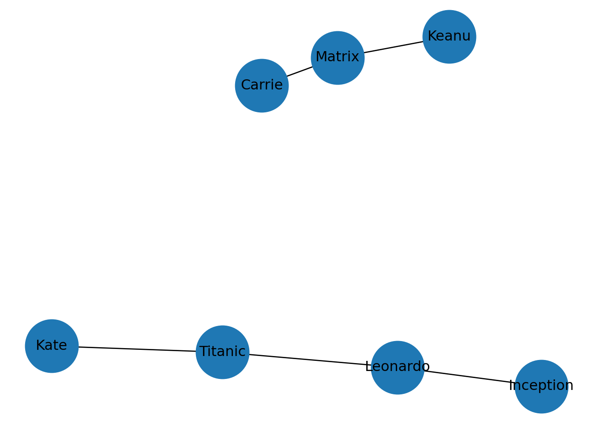
Otra forma de hacer el plot:
pos = nx.bipartite_layout(B, movies) # movies será la capa superior
nx.draw(B, pos,
with_labels=True,
node_size=2000,
node_color="lightblue")
plt.title("Red bipartita (películas arriba, actores abajo)")
plt.show()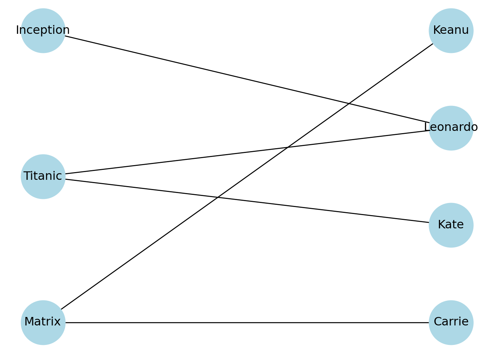
Y se puede “forzar” también esto:
movies = list(df["Movie"].unique())
actors = list(df["Actor"].unique())
pos = {}
# Películas arriba (y=1)
for i, movie in enumerate(movies):
pos[movie] = (i, 1)
# Actores abajo (y=0)
for i, actor in enumerate(actors):
pos[actor] = (i, 0)
nx.draw(B, pos,
with_labels=True,
node_size=2000,
node_color="lightyellow",
edge_color="gray")
plt.title("Red bipartita forzada (arriba películas, abajo actores)")
plt.ylim(-0.5, 1.5)## (-0.5, 1.5)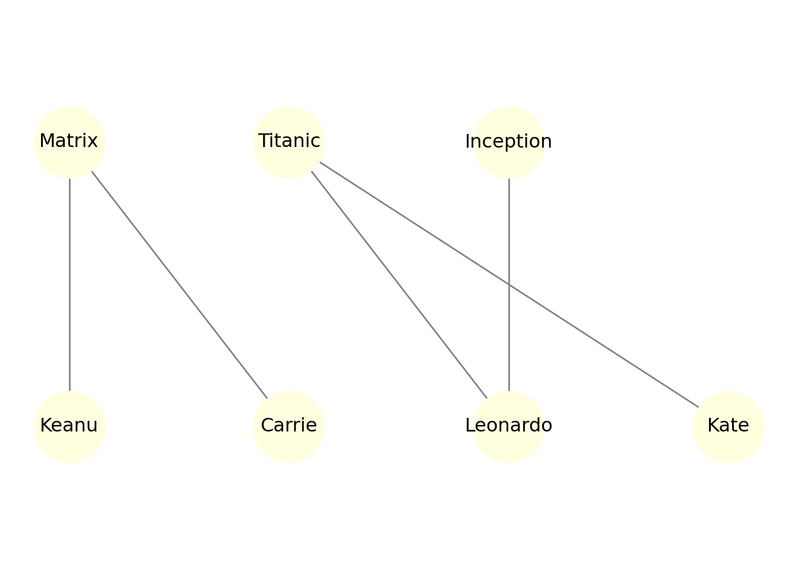
Otra forma más, coloreando cada capa:
color_map = []
for node in B.nodes():
if node in movies:
color_map.append("lightcoral")
else:
color_map.append("lightblue")
nx.draw(B, pos,
with_labels=True,
node_color=color_map,
node_size=2000)
plt.title("Red bipartita con capas diferenciadas")
plt.show()
2.8.1 Matriz de incidencia
B_matrix = np.zeros((len(movies), len(actors)))
for _,row in df.iterrows():
i = list(movies).index(row.Movie)
j = list(actors).index(row.Actor)
B_matrix[i,j] = 1
print(B_matrix)## [[1. 1. 0. 0.]
## [0. 0. 1. 1.]
## [0. 0. 1. 0.]]2.8.2 Proyección one-mode
## [[1. 1. 0. 0.]
## [1. 1. 0. 0.]
## [0. 0. 2. 1.]
## [0. 0. 1. 1.]]from networkx.algorithms import bipartite
df = pd.DataFrame({
"Movie": ["Matrix","Matrix","Titanic","Titanic","Inception"],
"Actor": ["Keanu","Carrie","Leonardo","Kate","Leonardo"]
})
movies = list(df["Movie"].unique())
actors = list(df["Actor"].unique())
# Grafo bipartito
B = nx.Graph()
B.add_nodes_from(movies, bipartite=0)
B.add_nodes_from(actors, bipartite=1)
B.add_edges_from([(row.Movie, row.Actor) for _, row in df.iterrows()])
# Posiciones forzadas (películas arriba, actores abajo)
pos = {}
for i, m in enumerate(movies):
pos[m] = (i, 1)
for i, a in enumerate(actors):
pos[a] = (i, 0)
# Colores por capa
node_colors = ["lightcoral" if n in movies else "lightblue" for n in B.nodes()]
nx.draw(B, pos, with_labels=True, node_color=node_colors, node_size=2000, edge_color="gray")
plt.title("Bipartita: películas (arriba) – actores (abajo)")## Text(0.5, 1.0, 'Bipartita: películas (arriba) – actores (abajo)')## (-0.6, 1.6)## (np.float64(-0.31500000000000006), np.float64(3.315), np.float64(-0.6), np.float64(1.6))
Vamos a crear las dos proyecciones.
2.8.3 Proyección one-mode a Actores
# Proyección a actores (one-mode)
P_actors = bipartite.weighted_projected_graph(B, actors)
print("Aristas (actor-actor) con pesos:", list(P_actors.edges(data=True)))## Aristas (actor-actor) con pesos: [('Keanu', 'Carrie', {'weight': 1}), ('Leonardo', 'Kate', {'weight': 1})]posA = nx.spring_layout(P_actors, seed=12)
nx.draw(P_actors, posA, with_labels=True, node_size=2000, node_color="lightblue", edge_color="gray")
# Etiquetas de peso
labelsA = nx.get_edge_attributes(P_actors, "weight")
nx.draw_networkx_edge_labels(P_actors, posA, edge_labels=labelsA)## {('Keanu', 'Carrie'): Text(-0.35775095734238305, 0.19487556024727604, '1'), ('Leonardo', 'Kate'): Text(0.3577635707881759, -0.19487292868700534, '1')}## Text(0.5, 1.0, 'Proyección one-mode: red de actores (peso = películas compartidas)')## (np.float64(-0.9375232965348552), np.float64(1.184108548539511), np.float64(-0.699174762922632), np.float64(1.0700229118070153))
2.8.4 Proyección one-mode a PELÍCULAS
# Proyección a películas (one-mode)
P_movies = bipartite.weighted_projected_graph(B, movies)
print("Aristas (movie-movie) con pesos:", list(P_movies.edges(data=True)))## Aristas (movie-movie) con pesos: [('Titanic', 'Inception', {'weight': 1})]posM = nx.spring_layout(P_movies, seed=12)
nx.draw(P_movies, posM, with_labels=True, node_size=2300, node_color="lightcoral", edge_color="gray")
labelsM = nx.get_edge_attributes(P_movies, "weight")
nx.draw_networkx_edge_labels(P_movies, posM, edge_labels=labelsM)## {('Titanic', 'Inception'): Text(-0.5000007838353786, -0.32225756924227716, '1')}## Text(0.5, 1.0, 'Proyección one-mode: red de películas (peso = actores compartidos)')## (np.float64(-0.7473488387186665), np.float64(1.0832070875580317), np.float64(-0.6374842965559769), np.float64(0.7055652738076293))
Si \(B\) es la matriz de incidencia (películas × actores), entonces:
\(B^TB\): co-ocurrencia actor–actor
\(BB^T\): co-ocurrencia película–película
# Matriz de incidencia: filas=películas, columnas=actores
Bmat = np.zeros((len(movies), len(actors)), dtype=int)
movie_idx = {m:i for i,m in enumerate(movies)}
actor_idx = {a:j for j,a in enumerate(actors)}
for _, row in df.iterrows():
Bmat[movie_idx[row.Movie], actor_idx[row.Actor]] = 1
print("B (películas x actores):\n", Bmat)## B (películas x actores):
## [[1 1 0 0]
## [0 0 1 1]
## [0 0 1 0]]W_actors = Bmat.T @ Bmat # actores x actores
W_movies = Bmat @ Bmat.T # películas x películas
print("\nB^T B (actores x actores):\n", W_actors)##
## B^T B (actores x actores):
## [[1 1 0 0]
## [1 1 0 0]
## [0 0 2 1]
## [0 0 1 1]]##
## B B^T (películas x películas):
## [[2 0 0]
## [0 2 1]
## [0 1 1]]2.9 Árboles
En Python, podemos crear árboles con la instrucción nx.path_graph(n)
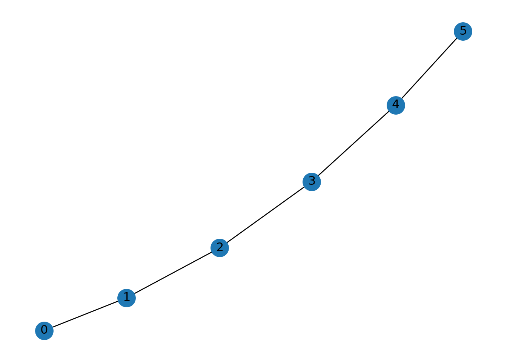
No hay una función tal cual que nos cree un árbol cualquiera, hay que jugar tantito con el código.
Lo que si podemos verificar es si una gráfica dada es un árbol, al verificar la condición de que \(|E| = |V|-1\).
## Nodos: 6## Aristas: 5## ¿Cumple m = n-1? TrueEjercicio: Genera un cycle_graph(6). Verifica si es un árbol. Elimina una arista y vuelve a verificar.
2.10 Gráficas planas
Con la función nx.check_planarity(Graph_object) podemos verificar si una red es plana o no.
## (True, <networkx.algorithms.planarity.PlanarEmbedding object at 0x000001C373349310>)## (False, None)Ejercicio: Verifica la planaridad de complete_graph(4) y complete_graph(6).
2.11 Grado y grado medio
## {0: 2, 1: 2, 2: 2, 3: 2, 4: 2, 5: 2}El grado medio lo podemos obtener de la siguiente forma:
deg_values = [d for n,d in G.degree()]
c = np.mean(deg_values)
print("EL grado medio c es igual a ", c)## EL grado medio c es igual a 2.0Teóricamente, el grado medio cumple que \(c=\frac{2m}{n}\), donde \(m\) es el número de aristas y \(n\) el número de vértices.
n = G.number_of_nodes()
m = G.number_of_edges()
v = 2*m/n
print('Se cumple la relación c=2m/n', c == v)## Se cumple la relación c=2m/n TrueEjercicio: Crea una complete_graph(8), calcula el grado medio y comparalo con la fórmula teórica.
2.12 Densidad
Para una red no dirigida, tenemos lo siguiente:
## 0.2Para el caso de una red dirigida,
## 0.25Ejemplo: Compara la desidad de las gráficas path_graph(20) y complete_graph(20). ¿Cuál es sparse y cuál densa?
2.13 Redes multicapa
G = nx.Graph()
G.add_edge("Ana","Luis", layer="amistad")
G.add_edge("Ana","Luis", layer="trabajo")
G.edges(data=True)## EdgeDataView([('Ana', 'Luis', {'layer': 'trabajo'})])
Ejercicio: ¿Cómo cambiaría el grado si consideramos cada capa por separado?
2.14 Redes dinámicas
G_t1 = nx.Graph()
G_t1.add_edges_from([(1,2),(2,3)])
G_t2 = nx.Graph()
G_t2.add_edges_from([(1,2),(2,4)])
print("Densidad t1:", nx.density(G_t1))## Densidad t1: 0.6666666666666666## Densidad t2: 0.66666666666666662.15 Caminos y trayectorias
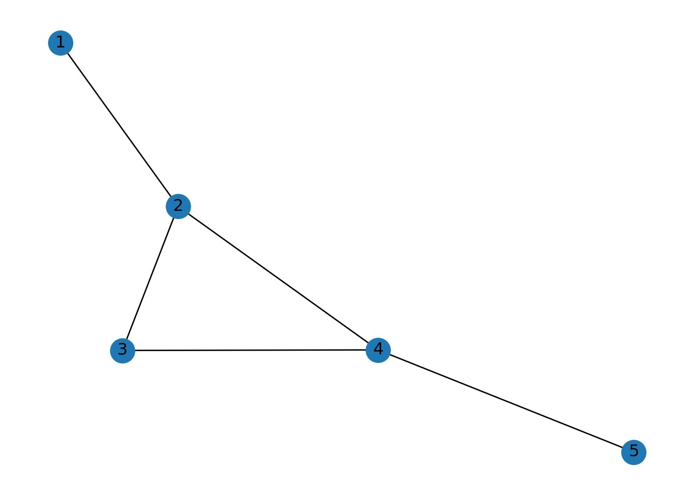
Podemos listas todos los posibles caminos simples(sin vértices repetidos):
## [[1, 2, 3, 4, 5], [1, 2, 4, 5]]Se puede demostrar que que un camino simple se puede encontrar en tiempo \(O(V+E)\) pero el número de trayectorias simples puede ser muy grande, por ejemplo para gráficas completas de orden \(n\) es de tiempo \(O(n!)\).
Uno puede especificar trayectorias de longitud \(r\) como sigue:
G = nx.complete_graph(4)
paths = nx.all_simple_paths(G, source=0, target=3, cutoff=2)
print(list(paths))## [[0, 1, 3], [0, 2, 3], [0, 3]]Y podemos obtenerlas también como la lista de aristas:
paths = nx.all_simple_paths(G, source=0, target=3)
for path in map(nx.utils.pairwise, paths):
print(list(path))## [(0, 1), (1, 2), (2, 3)]
## [(0, 1), (1, 3)]
## [(0, 2), (2, 1), (1, 3)]
## [(0, 2), (2, 3)]
## [(0, 3)]Podríamos también fijar solo uno de los nodos y el otro variarlo:
## [0, 1, 2]
## [0, 1, 2, 3]
## [0, 1, 3]
## [0, 1, 3, 2]
## [0, 2]
## [0, 2, 1, 3]
## [0, 2, 3]
## [0, 3]
## [0, 3, 1, 2]
## [0, 3, 2]La trayectoria que va de un vértice a si mismo de tamaño 0:
## [[0]]## [[0], [0, 1], [0, 1, 2]]Podemos contar las trayectorias de una raíz a sus hojas en una gráfica dirigida acíclica.
G = nx.DiGraph([(0, 1), (1, 2), (0, 3), (3, 2)])
roots = (v for v, d in G.in_degree() if d == 0)
leaves = (v for v, d in G.out_degree() if d == 0)
all_paths = []
for root in roots:
for leaf in leaves:
paths = nx.all_simple_paths(G, root, leaf)
all_paths.extend(paths)
all_paths## [[0, 1, 2], [0, 3, 2]]Iterar sobre cada ruta desde los nodos raíz a los nodos hoja en un gráfico acíclico dirigido pasando todas las hojas juntas para evitar cálculos innecesarios:
G = nx.DiGraph([(0, 1), (2, 1), (1, 3), (1, 4)])
roots = (v for v, d in G.in_degree() if d == 0)
leaves = [v for v, d in G.out_degree() if d == 0]
all_paths = []
for root in roots:
paths = nx.all_simple_paths(G, root, leaves)
all_paths.extend(paths)
all_paths## [[0, 1, 3], [0, 1, 4], [2, 1, 3], [2, 1, 4]]En las multigráficas, es decir si tenemos aristas paralelas, nos va a regresar las trayectorias múltiple veces:
## [[0, 1, 2], [0, 1, 2]]Como decíamos antes, el tiempo en el que encuentra caminos simples puede ser muy grande, entonces es recomendado preguntarse primero si existen caminos entre dos nodos.
## TrueG2 = nx.Graph()
G2.add_edges_from([(1, 2), (2, 3), (4, 5)])
# nodo 1 y nodo 3
path_exists_1_to_3 = nx.has_path(G2, 1, 3)
print(f"Existe una trayectoria de 1 a 3: {path_exists_1_to_3}")
# Nodo 1 y nodo 4
path_exists_1_to_4 = nx.has_path(G2, 1, 4)
print(f"Existe una trayectoria de 1 a 4: {path_exists_1_to_4}")Ejercicio: Construye una red que no tenga un camino entre dos nodos dados. Y usa la función has_path() para verificarlo.
2.16 Trayectorias más cortas
G1 = nx.Graph()
G1.add_edges_from([
(1,2),
(2,3),
(3,4),
(2,4),
(4,5)
])
nx.shortest_path(G1, source=1, target=4)## [1, 2, 4]G1 = nx.Graph()
G1.add_edges_from([
(1,2),
(2,3),
(3,4),
(2,4),
(4,5)
])
nx.shortest_path_length(G1, source=1, target=4)## 2Para el caso de gráficas con peso:
WG = nx.Graph()
WG.add_weighted_edges_from([
(1,2,1),
(2,3,2),
(1,3,5),
(3,4,1)
])
nx.shortest_path(WG, source=1, target=4, weight="weight")## [1, 2, 3, 4]Ejercicio: Modifica los pesos para que cambie el camino más corto.
2.17 Componentes conexas
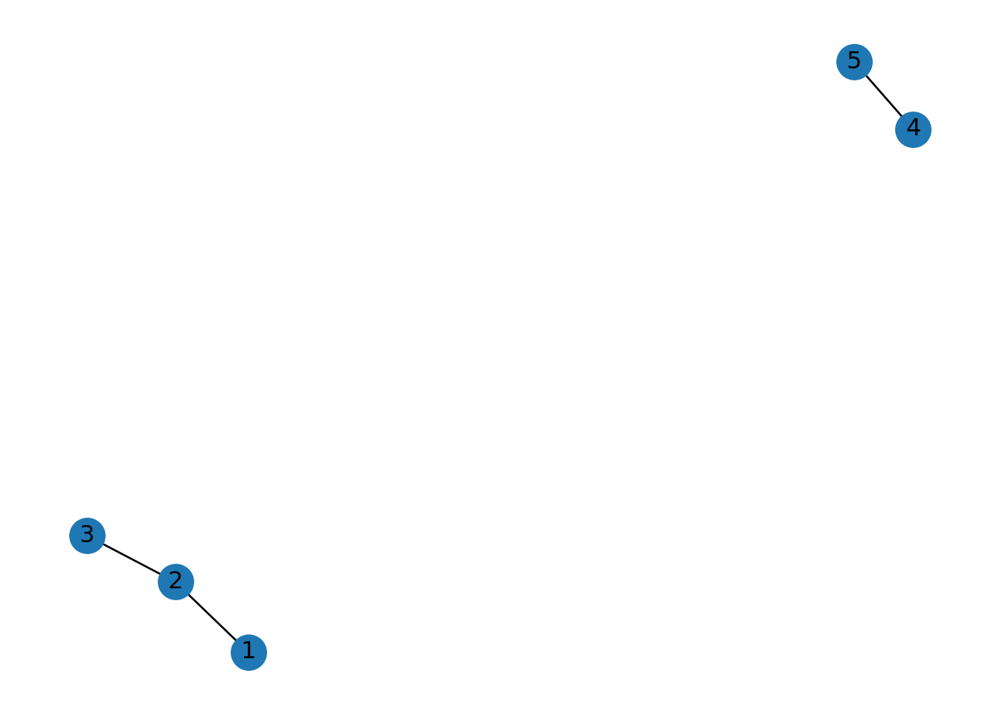
## [{1, 2, 3}, {4, 5}]## 2Para el caso de redes dirigidas, tenemos una forma de preguntar por las debilmente conectadas y las fuertemente conectadas.
## [{1, 2, 3, 4, 5}]## [{4}, {1, 2, 3}, {5}]Y para las In y Out componentes también:
descendants(G, source): nos regresa todos los vértices que son alcanzables desde algún vérticesource.ancestors(G, source): nos regresa todos los vértices que tienen una trayectoria al vérticesource.
## {2, 3, 4}## {2, 3}2.18 Trayectorias independientes
- Independientes por aristas:
G1 = nx.Graph()
G1.add_edges_from([
(1,2),
(2,3),
(3,4),
(2,4),
(4,5)
])
nx.edge_disjoint_paths(G1, 1, 4)## <generator object edge_disjoint_paths at 0x000001C370BF4CC0>G1 = nx.Graph()
G1.add_edges_from([
(1,2),
(2,3),
(3,4),
(2,4),
(4,5)
])
list(nx.edge_disjoint_paths(G1, 1, 4))## [[1, 2, 4]]- Independientes por vértices:
G1 = nx.Graph()
G1.add_edges_from([
(1,2),
(2,3),
(3,4),
(2,4),
(4,5)
])
list(nx.node_disjoint_paths(G1, 1, 4))## [[1, 2, 4]]2.19 Conjuntos de corte
- Conjunto de corte por aristas mínimo:
G1 = nx.Graph()
G1.add_edges_from([
(1,2),
(2,3),
(3,4),
(2,4),
(4,5)
])
nx.minimum_edge_cut(G1, 1, 4)## {(1, 2)}- Conjunto de corte por vértices mínimo:
G1 = nx.Graph()
G1.add_edges_from([
(1,2),
(2,3),
(3,4),
(2,4),
(4,5)
])
nx.minimum_node_cut(G1, 1, 4)## {2}